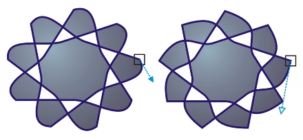

Быстрые ссылки на процедуры, описанные на этой странице:
Выбор и перемещение узлов
Можно выбрать отдельные узлы, несколько узлов или все узлы объекта. Выбор нескольких узлов позволяет одновременно сформировать разные части объекта. Узлы можно выделить рамкой путем заключения их в прямоугольное поле выделения или в поле выделения неправильной формы. Выбор с помощью рамки выделения свободной формы удобен, если требуется выбрать определенные узлы в сложных кривых.
При выборе узла на изогнутых сегментах отображаются маркеры управления. Форму изогнутых сегментов можно настроить путем перемещения узлов и маркеров управления.

Обычно маркер управления отображается в виде сплошной синей стрелки (слева). Когда маркер управления накладывается на узел, он отображается в виде незакрашенной синей стрелки рядом с узлом (справа).
Фигура — это стандартный инструмент для перемещения узлов. Для выбора и перемещения узлов можно также использовать инструменты Указатель и Безье.
| Выбор узла |
 |
1. |
|
В наборе инструментов выберите инструмент Фигура  .
|
|
Дополнительные возможности
|
|
|
Выделение нескольких узлов рамкой
|
На панели свойств выберите Прямоугольные в списке Режим выбора и перетащите курсор вокруг узлов, которые требуется выбрать.
|
|
Выделение нескольких узлов рамкой свободной формы
|
На панели свойств выберите Свободная форма в списке Режим выбора и обведите курсором узлы, которые требуется выбрать.
|
|
Выбор нескольких узлов
|
Удерживая нажатой клавишу Shift, щелкните каждый узел.
|
|
Выбор всех узлов на выбранном объекте кривой
|
Выберите Правка  Выбрать все Узлы Выбрать все Узлы.
|
|
Выбор первого или последнего узла объекта кривой
|
Нажмите клавишу Home или End.
|
|
Выбор узла, который располагается до или после выбранного узла
|
Нажмите клавишу Tab или Shift + Tab.
|
|
Отмена выбора узла
|
Удерживая нажатой клавишу Shift, щелкните выбранный узел.
|
|
Отмена выбора нескольких узлов
|
Удерживая нажатой клавишу Shift, щелкните все выбранные узлы.
|
|
Отмена выбора всех узлов
|
Щелкните в свободном месте окна рисования.
|
 |
Кроме того, узел можно выбрать с помощью инструмента Указатель
 , Свободная форма  , Безье  или Ломаная линия  . Для
этого сначала выберите пункт Инструменты Параметры. В
списке категорий Рабочее пространство выберите Монитор и
установите флажок Включить отслеживание узла. Выберите
объект кривой, переместите указатель на узел, чтобы отобразился
курсор состояния формы инструмента , а затем щелкните узел.
Если установлен флажок Включить отслеживание узла, не
требуется выбирать и перемещать объект путем выбора и
перетаскивания одного из его узлов.
|
Для выбора всех узлов на кривой дважды щелкните инструмент
Фигура.
|
| Перемещение узла |
|
1. |
|
Выберите объект с помощью инструмента Фигура .
|
2. |
|
Перемещайте узел, пока не будет получена желаемая форма.
|
Кроме того, узел можно переместить с помощью инструмента
Указатель , Свободная форма , Безье или Полилиния .
Для этого сначала выберите пункт Инструменты Параметры. В
списке категорий Рабочее пространство выберите Монитор и
убедитесь, что установлен флажок Включить отслеживание узла.
Выберите объект кривой, переместите указатель на узел, чтобы
отобразился курсор состояния формы инструмента , а затем
перетащите узел.
|
Copyright 2012 Corel Corporation. Все права защищены.